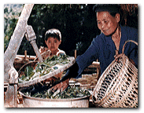
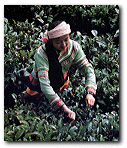
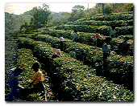

|
首页 | 茶文化研究社 | 中国茶道札记
| 留言板 | English
Version

茶 具 的 鉴 赏 和 选 择
我国最古者的茶具是陶土制的缶，类似今天四
川、云南的烤茶罐，既可煮茶，也可作盛具，它形状古 朴，笨重粗糙。西汉以后发展了釉陶茶具，上釉后，外 表不仅光亮平滑，也有了鲜艳的色彩，它比起生陶茶
具就美得多了。以后我国茶具经过多方面发展，出现 的种类有茶炉、茶壶、茶碗、茶盏、茶杯、茶盘等专用 茶具。据唐代陆羽《茶经》所述，广义的茶具包括贮
茶、碾茶、炙茶、煮茶、调茶、饮茶等过程的器具共20 余种。
从茶具材料质地来看，我国出现过的种类有陶 土、瓷器、铜器、锡器、金器、银器、玉器、玛瑙、漆器、 景泰蓝等。到了现代，则以陶器茶具、瓷器茶具为主，
还有玻璃茶具、搪瓷茶具等，更是百花齐放，千姿百态。由于各地饮茶习惯、茶类及自然气候条件不同， 茶具可以灵活运用。如东北、华北一带，多数都用较
大的瓷壶泡茶，然后斟入瓷盅饮用。江苏、浙江一带 除用紫砂壶外．一般习惯用有盖瓷杯直接泡饮。四川 一带则喜用瓷制的“盖碗杯”，即口大底小的有盖小
茶碗，下面还有个小茶托。茶与茶具的关系很密切． 好茶必须用好的茶具泡饮，才能相得益彰。茶具的优 劣，对茶汤的质量和品饮者的心情都会产生显著的
影响。因为茶具既是实用品，又是观赏品，同时也是 极好的馈赠物品。
《红楼梦》中，妙玉在栊翠庵拥有的茶具，是不同 凡响的：有成窑“五彩小盖盅”，有官窑脱胎填白盖 碗，有“绿玉斗”，有九曲十环二百二十节蟠虬整雕竹
根的大盏，还有古玩奇珍的两只古杯，这说明我国当 时的茶具已是极丰富多彩的了。
 一般来说，现在通行的茶具以瓷器、玻璃居多，
陶器次之，搪瓷又次之。各类茶具中以瓷器茶具、陶 器茶具最好，玻璃茶具次之，搪瓷茶具再次之。因为， 瓷器茶具传热不快，保温适中，对茶不会发生化学反应，沏茶能获得较好的色香味，而且造型美观，装饰
梢巧，具有艺术欣赏价值。陶器茶具，造型雅致，色泽 古朴，特别是宜兴紫砂为陶中珍品，用来沏茶，香味 醇和，汤色澄清，保温性能好，即使夏天茶汤也不易
变质。但由于陶器不透明。沏茶后难以欣赏杯中的芽 叶美姿，是其缺陷。如果用玻璃茶具冲泡名茶，如龙 井、碧螺春、君山银针、瓜片等，杯中轻罗缥缈，澄清
一碧，茶芽朵朵，亭亭玉立，或旗枪交错，上下沉浮， 饮之沁人心脾，观之赏心悦目，别有风趣，充分发挥 了玻璃器具透明的优越性。至于搪瓷茶具也有它的优点，虽然欣赏价值比不上上述几种，且家庭、办公
室不太适宜，敬客不够庄重，促经久耐用，携带方便， 适宜于工厂车间、工地及旅行时使用。至于塑料茶 具，因质地关系，对茶味有影响，除临时使用外，平时都不适宜。尤其忌用塑料保暖杯冲泡高级绿茶，因杯
中长期保温，使茶汤泛红，香气低闷，并有熟味，大煞 风景。
有的地区，茶具是成套的的：贮茶、煮茶、沏茶、 饮茶成套；盏、盖、托成套；铜、瓷、锡等器具成套合用 等。譬如四川成都的“盖碗茶”，用的是铜茶壶、瓷盖
碗、锡制杯托，用这一系列茶具泡成的茶，色、香、味、形俱臻上乘，果然“正宗川味”。
 唐代，从《茶经》可以看出，民间仍以陶瓷茶碗为
主，瓷器比陶器色泽洁白，质地更细腻，这有利于观 赏茶汤美好的色泽。由于唐代斗富之风盛行，贵族家 中开始出现金、银、铜、锡等金属茶具，这类茶具很名
贵，但因为昂贵、笨重，而不能在社会上普及。宋代茶 具多用瓷茶盏，口敞底小，有黑釉、酱釉、青白釉等品 种，以黑色为主，“斗茶”用的茶具多为黑釉盏。元代
青白釉茶具较多，黑釉盏已逐步被青白釉茶盏代替。明代盛行用茶盏，中期以后又出现了用瓷壶和紫砂 壶的风尚。到了清代，广州织金彩瓷、福州脱胎漆器
等茶具相继而起。近代，又有了玻璃茶具和搪瓷茶 具，使我国茶具更加丰富多彩，仪态万千。现代茶具 不仅在生产技术上比过去先进，而且在品种、花色、
造型艺术上也比过去精巧美观。
我国目前的茶具，仍以“景瓷”和“宜陶”最为流行和名贵，普遍受到茶叶消费者的欢迎。
嘉木之盟:::华东师大二附中茶文化研究社
(网站设计/制作)版权所有(C)2001-2002 Cloud
Ryan
网站版本: 2.0
特别鸣谢Harry S.对本网站制作提供的帮助
所有资讯内容均来自网上，转载时请注明源出处。
|